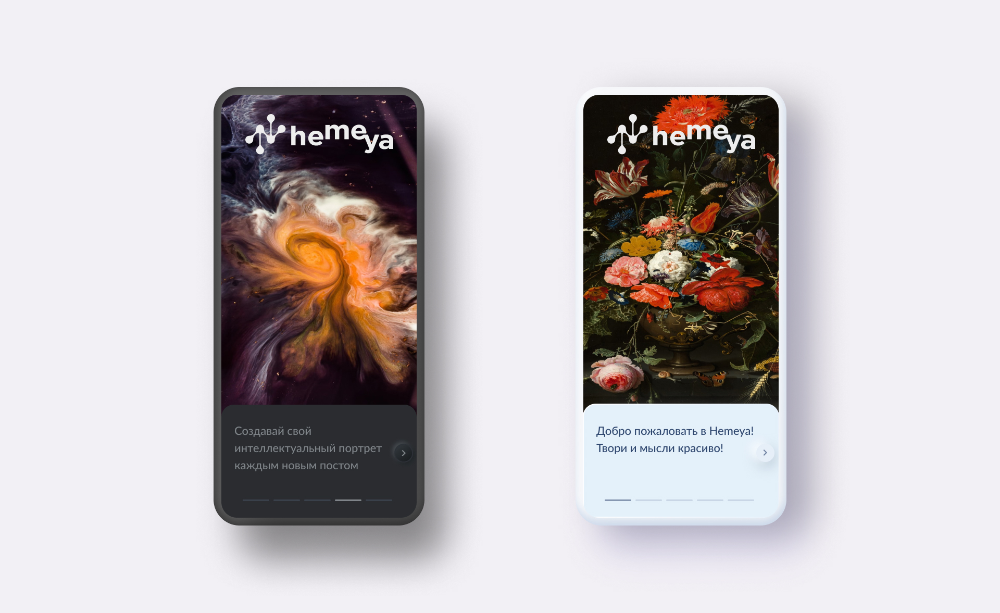
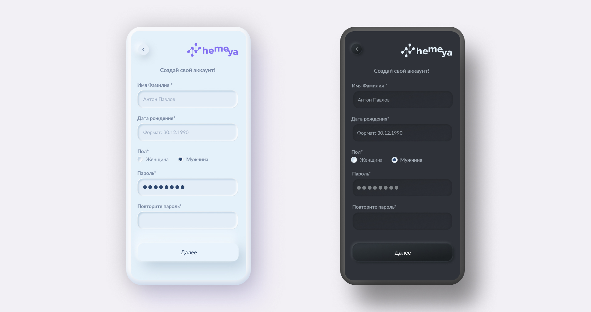
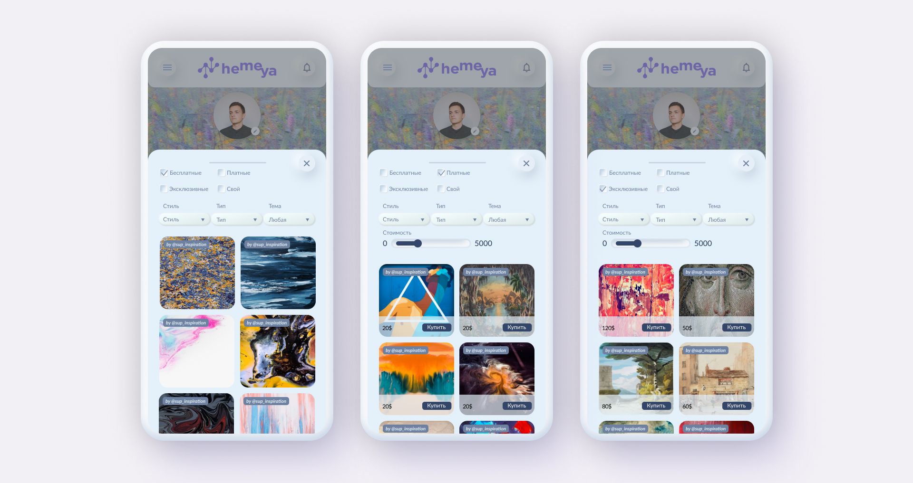
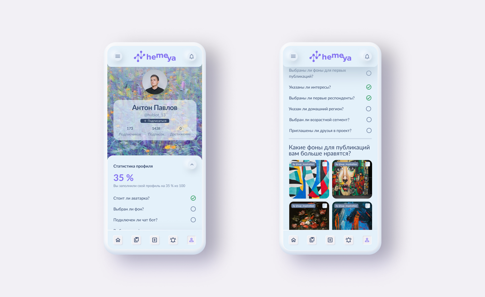
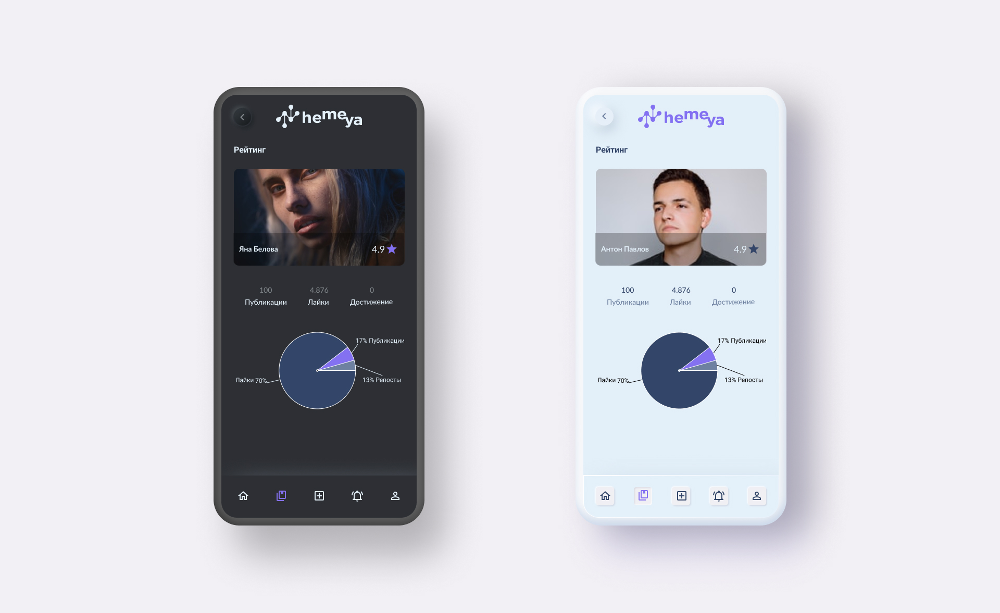

Hemeya
OVERVIEW
Hemeya - here the thoughts of smart people connect with art.
Hemeya is a social media project aimed at intellectuals who are able to create inspiring content and artists who want to get organic promotion of themselves and their works.
ROLE
UX/UI Designer
Product Strategy, User Research, Interaction, Visual design, Prototyping & Testing, Pitching
Background
Sasha Geo - The founder of the project, became famous by founding the GEOMETRIA.ru project in 2002 and leading it until the end of the project in the fall of 2019. For the design, I chose the neomorphism style, but at the same time I did not overdo it, since we must not forget about the convenience of interacting with the interface. This is a design that looks realistic, futuristic, modern, eye-catching and incredibly exciting thanks to its soft shadow and overall look.
Understanding the problem
I conducted a brainstorming workshop with the team to uncover pains felt by individuals. It was revealed that:
- Individuals were unaware of their direct impact of their water, electricity and consumption on the environment
- Individuals wanted to take action on reducing their carbon footprint but didn't know where to begin
- Individuals would be more conscious of their actions if their impact was quantifiable and measurable
Product vision and solution
From these findings, we decided as a product to identify key business goals:
- We want users to understand the impact of their current usage
- We want users to take actions to reduce their water, waste and electricity usage
- We want users to understand how their actions positively affect change
Defining the MVP
Based on the sketching sessions, it was revealed that there were commonalties in the product vision. We identified the following key user stories:
- Set a goal. Users can define environmental goals e.g. to save electricity, conserve water, reduce waste.
- Receive tasks to do. Users receive a list of actions to perform based on their goals e.g. turn off unused lights, turn off running taps, switch off unused powerpoints etc.
- View impact over time. Users can see their progress over time and the measurable impact of their actions on the environment.
- Earn Rewards. Users are rewarded for efforts towards reducing their carbon footprint in the form of discounts on electricity and water bills.
- Login screen
- Register profile
- Select a goal
- To do list
- Progress dashboard
- Rewards page
Designs
With the clock ticking, I quickly did some mockups of the basic user journey before going over it with the desired styling. I opted for a refreshing gradient look and the simplicity of the UI. I then created for the developers a clickable prototype in Invision.
Get started screen
This screen was simply created to showcase our logo and encourage users to click on the button to get started. Register account
Users would fill in a simple sign up form to create a new account. Goal definition
Users can select one or more environmental goals that they wish to achieve. List of daily tasks
Based on the goals selected, users would receive a list of daily reminders and tasks to raise awareness of reducing their carbon footprint in their day to day. Rewards
To encourage people to use this app, we would partner with businesses such as AGL, Sydney Water and Origin to offer discounts and rewards on energy and water bills for users who make a conscious effort to reduce their carbon footprint. Development
I used Invision to allow the engineers to inspect the HTML and CSS of the designs. The team used Glitch to develop the application and the app was built using React. It is accessible via the web and on native iOS app.